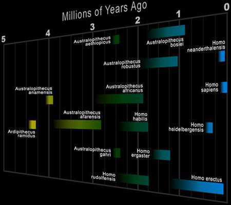

Human Origins
Human Origins
Fossil Record of Human Evolution
To provide some context to the discussion of where we might go (evolutionarily speaking), it is important to understand from where we came.
Archaeologyinfo.com
has more matetrial on this as well as many other related topics. Descriptions of the species depicted on the following chart can be found beneath it.

Hominid Species
The times of existence of the various hominid shown in the chart above are based on dated fossil remains. Each species may have existed earlier and/or later than shown, but fossil proof has not been discovered yet. There is also dispute concerning many overlapping species, for example, the overlap between Homo habilis and Homo erectus. It could well be that the two are continuing examples of the same species. The same dispute exists with Homo erectus, Homo sapiens archaic and homo sapiens sapiens. If all species have been discovered and the lineage of man lies within them, the most probable lineage would include all but the robust Australopithecines and the neandertal.
The following chronology is abbreviated:
The earliest fossil hominid, Ardipithecus ramidus, is a recent discovery. It is dated at 4.4 million years ago. The remains are incomplete but enough is available to suggest it was bipedal and about 4 feet tall. Other fossils were found with the ramidus fossil which would suggest that ramidus was a forest dweller. A new skeleton was recently discovered which is about 45% complete. It is now being studied.
A new species, Australopithecus anamensis, was named in 1995. It was found in Allia Bay in Kenya. Anamensis lived between 4.2 and 3.9 million years ago. Its body showed advanced bipedal features, but the skull closely resembled the ancient apes.
Australopithecus afarensis lived between 3.9 and 3.0 million years ago. It retained the apelike face with a sloping forehead, a distinct ridge over the eyes, flat nose and a chinless lower jaw. It had a brain capacity of about 450 cc. It was between 3'6" and 5' tall. It was fully bipedal and the thickness of its bones showed that it was quite strong. Its build (ratio of weight to height) was about the same as the modern human but its head and face were proportionately much larger. This larger head with powerful jaws is a feature of all species prior to Homo sapiens sapiens.
Australopithecus africanus was quite similar to afarensis and lived between three and two million years ago. It was also bipedal, but was slightly larger in body size. Its brain size was also slightly larger, ranging up to 500 cc. The brain was not advanced enough for speech. The molars were a little larger than in afarensis and much larger than modern human. This hominid was a herbivore and ate tough, hard to chew, plants. The shape of the jaw was now like the human.
Australopithecus aethiopicus lived between 2.6 and 2.3 million years ago. This species is probably an ancestor of the robustus and boisei. This hominid ate a rough and hard to chew diet. He had huge molars and jaws and a large sagittal crest. A sagittal crest is a bony ridge on the skull extending from the forehead to the back of the head. Massive chewing muscles were anchored to this crest. See the opening picture of an early Homo habilis for an example. Brain sizes were still about 500cc, with no indication of speech functions.
Australopithecus robustus lived between two and 1.5 million years ago. It had a body similar to that of africanus, but a larger and more massive skull and teeth. Its huge face was flat and with no forehead. It had large brow ridges and a sagittal crest. Brain size was up to 525cc with no indication of speech capability.
Australopithecus boisei lived between 2.1 and 1.1 million years ago. It was quite similar to robustus, but with an even more massive face. It had huge molars, the larger measuring 0.9 inches across. The brain size was about the same as robustus. Some authorities believe that robustus and boisei are variants of the same species.
Homo habilis was called the handy man because tools were found with his fossil remains. This species existed between 2.4 and 1.5 million years ago. The brain size in earlier fossil specimens was about 500cc but rose to 800cc toward the end of the species life period. The species brain shape shows evidence that some speech had developed. Habilis was about 5' tall and weighed about 100 pounds. Some scientists believe that habilis is not a separate species and should be carried either as a later Australopithecine or an early Homo erectus. It is possible that early examples are in one species group and later examples in the other.
Homo erectus lived between 1.8 million and 300,000 years ago. It was a successful species for a million and a half years. Early examples had a 900cc brain size on the average. The brain grew steadily during its reign. Toward the end its brain was almost the same size as modern man, at about 1200cc. The species definitely had speech. Erectus developed tools, weapons and fire and learned to cook his food. He traveled out of Africa into China and Southeast Asia and developed clothing for northern climates. He turned to hunting for his food. Only his head and face differed from modern man. Like habilis, the face had massive jaws with huge molars, no chin, thick brow ridges, and a long low skull. Though proportioned the same, he was sturdier in build and much stronger than the modern human.
Homo sapiens (archaic) provides the bridge between erectus and Homo sapiens sapiens during the period 200,000 to 500,000 years ago. Many skulls have been found with features intermediate between the two. Brain averaged about 1200cc and speech was indicated. Skulls are more rounded and with smaller features. Molars and brow ridges are smaller. The skeleton shows a stronger build than modern human but was well proportioned.
Homo sapiens neandertalensis lived in Europe and the Mideast between 150,000 and 35,000 years ago. Neandertals coexisted with H.sapiens (archaic) and early H.sapiens sapiens. It is not known whether he was of the same species and disappeared into the H.sapiens sapiens gene pool or he may have been crowded out of existence (killed off) by the H.sapien sapien. Recent DNA studies have indicated that the neandertal was an entirely different species and did not merge into the H. sapiens sapiens gene pool. Brain sizes averaged larger than modern man at about 1450cc but the head was shaped differently, being longer and lower than modern man. His nose was large and was different from modern man in structure. He was a massive man at about 5'6" tall with an extremely heavy skeleton that showed attachments for massive muscles. He was far stronger than modern man. His jaw was massive and he had a receding forehead, like erectus.
Homo sapiens sapiens first appeared about 120,000 years
ago. Modern humans have an average brain size of about 1350 cc.
^ Top ^